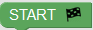
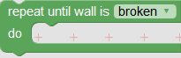
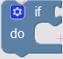

Level 1 - Movement
- Top left corner: This is your Game area. This is where lives. You can interact with by placing blocks into the Blockly area.
- Top right corner: This is the Blockly area where your commands (blocks) reside. You can drag and drop blocks inside the white area and when you hit the Run game button, will take action.
- Bottom left corner: This is the Instructions area. Here you will learn about the functionality of the blocks, your goals and information about new enemies.
- Bottom right corner: This is the Run game output area. Over this area you can see how many blocks you used, which types and how many times you reseted the game. You will also get a usefull tip in some cases.
Blocks Functionality:
- Block start (): This is always the first block of your commands. Place this block first.
- Block move left ( ): This block will move to the left by 100 pixels. 100 pixels is the distance between 2 stars.
): This block will move to the left by 100 pixels. 100 pixels is the distance between 2 stars.
- Block move right ( ): This block will move to the right by 100 pixels.
): This block will move to the right by 100 pixels.
Level 2 - Jump
New Obstacles:
- Spikes ( ). Spikes are dangerous, if hits the spikes he will hurt himself and he wont be able to follow your commands anymore.
). Spikes are dangerous, if hits the spikes he will hurt himself and he wont be able to follow your commands anymore.
New Block:
- Jump ( ). With jump block you can tell to jump. If you want to jump and move (left or right) at the same time then use the Jump block first and under the Jump block use the move (left or right) block.
). With jump block you can tell to jump. If you want to jump and move (left or right) at the same time then use the Jump block first and under the Jump block use the move (left or right) block.
Attention: From now on every time you hit the Reset Game button, loses 10 score points.
Always Remember: moves 100 pixels at a time. The distance between 2 stars is 100 pixels.
Now it's time to clear this level!
Level 3 - Repeat 'n' times
New Obstacles:
- Alien ( ). Aliens are attracted by the stars and they will attack anyone who gets near them.
). Aliens are attracted by the stars and they will attack anyone who gets near them.
New Block:
- Repeat 3 times ( ). With repeat 3 times block, as the name indicates you can repeat the same commands 3 times. You can change the number "3" to any number you like and the commands will be repeatd as many times as the number you placed inside the repeat block. For example, if you use repeat "2" times and inside the repeat block you place the move right block, then will move 2 stars to the right (200pixels).
). With repeat 3 times block, as the name indicates you can repeat the same commands 3 times. You can change the number "3" to any number you like and the commands will be repeatd as many times as the number you placed inside the repeat block. For example, if you use repeat "2" times and inside the repeat block you place the move right block, then will move 2 stars to the right (200pixels).
- uses laser beam ( ). With this block you prepare to shoot a laser beam.
). With this block you prepare to shoot a laser beam.
- shoot laser beam ( ). With this block you can guide at which direction to shoot the laser beam.
). With this block you can guide at which direction to shoot the laser beam.
Attention: Every time you hit the Reset Game button, loses 10 score points.
Always Remember: moves 100 pixels at a time. The distance between 2 stars is 100 pixels.
Level 4 - Repeat While
New Obstacles:
- Wall ( ). A wall is an obstacle that will block your path. You can brake a wall by attacking it many times. The new "repeat while wall is (broken or not broken)" will help you brake the wall.
). A wall is an obstacle that will block your path. You can brake a wall by attacking it many times. The new "repeat while wall is (broken or not broken)" will help you brake the wall.
New Block:
- Repeat while wall is (broken or not broken) ( ). This block will help you brake the wall. You have two options (broken or not broken). Those options are called conditions. Repeat while wall is (broken or not broken) will keep repeating the blocks you put inside it as many times as your condition is true. For example when you start this level the wall inside the game is "not broken". If you keep attacking the wall then it will eventually brake. So you can use Repeat while wall is (broken or not broken) block and inside it put use laser beam block to attack the wall many times. When the wall is broken your Repeat while wall is (broken or not broken) block will stop repeating the blocks you used inside it .
). This block will help you brake the wall. You have two options (broken or not broken). Those options are called conditions. Repeat while wall is (broken or not broken) will keep repeating the blocks you put inside it as many times as your condition is true. For example when you start this level the wall inside the game is "not broken". If you keep attacking the wall then it will eventually brake. So you can use Repeat while wall is (broken or not broken) block and inside it put use laser beam block to attack the wall many times. When the wall is broken your Repeat while wall is (broken or not broken) block will stop repeating the blocks you used inside it .
Attention 1: Every time you hit the Reset Game button, loses 10 score points.
Attention 2: If you don't place any blocks inside your Repeat while wall is (broken or not broken) and your condition is true, then will keep going left and right with out to know what to do.
Always Remember: moves 100 pixels at a time. The distance between 2 stars is 100 pixels.
Level 5 - Repeat Until
New Block:
- Repeat until wall is (broken or not broken) (). This block can help you brake the wall too. You have two options (broken or not broken). Remember those options are called conditions. Repeat until wall is (broken or not broken) will keep repeating the blocks you put inside it as many times as your condition is not true. For example when you start this level the wall inside the game is "not broken". If you keep attacking the wall then it will eventually brake. So you can use Repeat until wall is (broken or not broken) block and inside it put use laser beam block to attack the wall many times. When the wall is broken your Repeat until wall is (broken or not broken) block will stop repeating the blocks you used inside it .
Attention 1: Every time you hit the Reset Game button, loses 10 score points.
Attention 2: If you don't place any blocks inside your Repeat until wall is (broken or not broken) and your condition is not true, then will keep going left and right with out to know what to do.
Always Remember: moves 100 pixels at a time. The distance between 2 stars is 100 pixels.
Level 6 - Simple If
New Blocks:
- if (condition) (). We learned that conditions can be either true or false. If the condition is true then the blocks you put inside the "if" block are executed once without repeating. If you put an "if" block inside a "repeat" block then the "if" block will be executed as many times as your repeat block.
- star has:"option" color ( ). This is the condition of your "if" block. With this block you can check if steps on a red (or green or blue) star. If steps on the color you selected then the condition of "if" block becomes true and the blocks you have putted inside it are executed.
). This is the condition of your "if" block. With this block you can check if steps on a red (or green or blue) star. If steps on the color you selected then the condition of "if" block becomes true and the blocks you have putted inside it are executed.
- collect "option" star ( ). With this block you can tell to collect the color you selected. must be on top of the colorful star in order to be collected. Collecting colorful stars is hard and thats why you tell the adventurer to collect the colorful star at the right time only. Otherwise you will waste a large amount of time.
). With this block you can tell to collect the color you selected. must be on top of the colorful star in order to be collected. Collecting colorful stars is hard and thats why you tell the adventurer to collect the colorful star at the right time only. Otherwise you will waste a large amount of time.
Attention: Every time you hit the Reset Game button, loses 10 score points.
Always Remember: moves 100 pixels at a time. The distance between 2 stars is 100 pixels.
Level 7 - If - else
Important Block:
- if (condition) else if (condition) else ( ). At Level 6 you learned how a simple "if" block works. Now it is time to create an "else if" control. If you check your "if" block you will see a little button (
). At Level 6 you learned how a simple "if" block works. Now it is time to create an "else if" control. If you check your "if" block you will see a little button ( ) on it. This button will help you expand your simple if block and check for more conditions. In our game there are 3 rare colorful types of stars (red, gree, blue). Whenever the adventurer steps on a colorful rare star you have to check what color it is inside your "if" or "else if" condition and if the condition is true you will have to tell to collect the right colorful star. will start by checking the first condition of your "if-else" block. If your first condition is true then will execute the command blocks you putted inside it and ingore the rest of the "else if" conditions. On the other hand if your first condition is false, then will look at the second "else if" condition and so on.
) on it. This button will help you expand your simple if block and check for more conditions. In our game there are 3 rare colorful types of stars (red, gree, blue). Whenever the adventurer steps on a colorful rare star you have to check what color it is inside your "if" or "else if" condition and if the condition is true you will have to tell to collect the right colorful star. will start by checking the first condition of your "if-else" block. If your first condition is true then will execute the command blocks you putted inside it and ingore the rest of the "else if" conditions. On the other hand if your first condition is false, then will look at the second "else if" condition and so on.
Attention: Every time you hit the Reset Game button, loses 10 score points.
Always Remember: moves 100 pixels at a time. The distance between 2 stars is 100 pixels.
Level 8 - Nested if
Important Block:
- if (condition) inside an if (condition) (). When you place an "if" block inside an "if" block as the previous image shows, then the second "if" block is called Nested if. When you use 2 "if" blocks inside each other then you can check two conditions and if those conditions are true you can execute the blocks you put inside the do area. In our image example the first condition checks if is on top of a red star. If stands on top of a red star then the codition is true and then checks for the "Nested if" condition, which sees if the colorful star that the adventurer stands on has a balloon. The balloons have the same color as the stars beneath them.
New Blocks:
- star has balloon on top (). With this block you can check if the star stands on has a balloon on top of it. Important: You should always collect the balloon first and then collect the star. Otherwise if you collect the star first and then check if the star has a balloon on top of it, will get confused and forget that there was a star there.
- jump and collect option balloon (). With this block can jump and collect the colorful balloon of your choice
Attention: Every time you hit the Reset Game button, loses 10 score points.
Always Remember: moves 100 pixels at a time. The distance between 2 stars is 100 pixels.
Level 9 - Method
Methods:
This level will help you understand how methods work. In our game every time you step on a star you wann check the color of it, then check if it has a balloon on top of it, if it has a balloon collect it and then collect the star. You have to repeat those steps every time you see many colorful stars next to each other. Here is where a method can help you. When you wann repeat the same actions again and again, in our case check for stars and balloons, you can create a method and put inside it all those actions. For example you can create a method with a name "check for balloons and stars" and inside it make all those checks we described earlier. When your method is ready use the "call method" block under the start block and the the right potition.
New Blocks:
- Method name: "you name it" (). Drag and drop a method block inside your Blockly Area. Do not connect this block with the Start block. Give a name to your method and inside it place any blocks you like. Those block wont be executed by unless you call that method with a "call method" block and connect that block under the Start block
- call method (). With this block you call the method with that name and tell to execute all the blocks you have putted inside that method. In order to create a call method block, select the method you created, right click on it and then click on the 'create "your method's name"' option.
At the example bellow you can see a method created with the name "how to move", which moves the adventurer one time to the right. Then under the Start block we call that method with the help of the call method block "how to move".
()
Attention: Every time you hit the Reset Game button, loses 10 score points.
Always Remember: moves 100 pixels at a time. The distance between 2 stars is 100 pixels.
Level 10 - Limited Blocks
Learning Goal: Use all the available blocks to complete this level.
Level 11 - Variable
New blocks:
- set "variable" to "your input": Think variables as a container where you can store some data. At the example image the variable is called 'password'. By using that name we can access the data we stored inside it. The set 'variable' to 'your input' block allows you to store 'your input' data (which is number 5 at the example image) inside a variable called 'password'
- open door with password: "variable" With this block you can try to open the door by using the variable name you created earlier. If you entered the right password inside your variable (at the example image the variable is called password) then the door will open. It is important to set the password variable first and then try to open the door.
Attention: Every time you hit the Reset Game button, loses 10 score points.
Always Remember: moves 100 pixels at a time. The distance between 2 stars is 100 pixels.